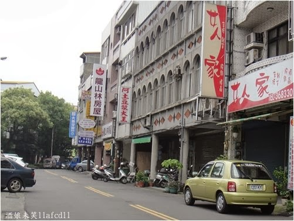
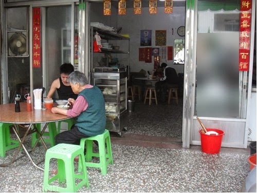
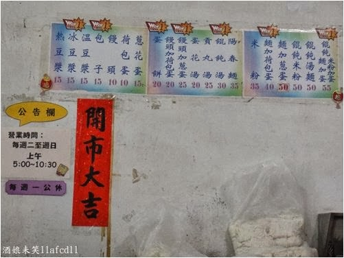
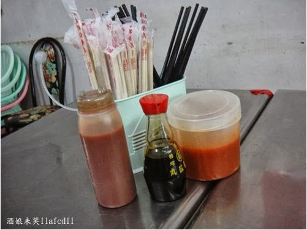
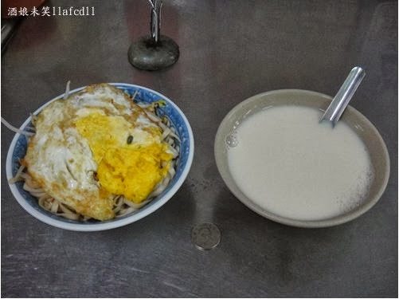
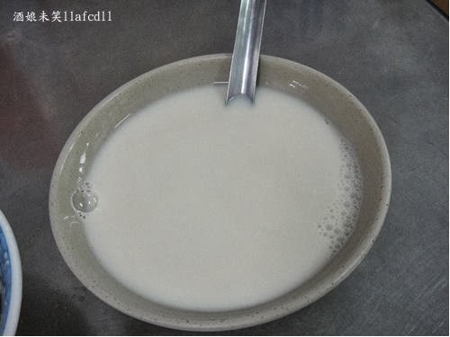
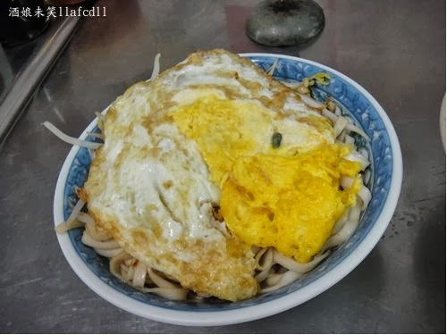
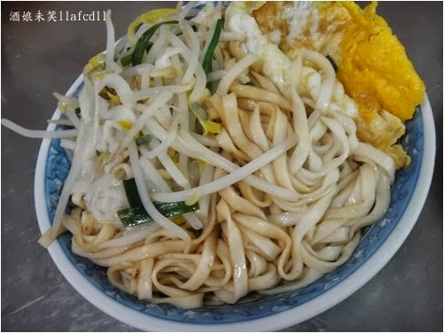
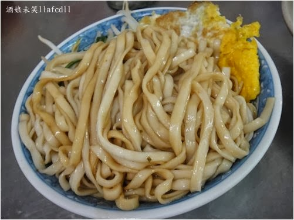
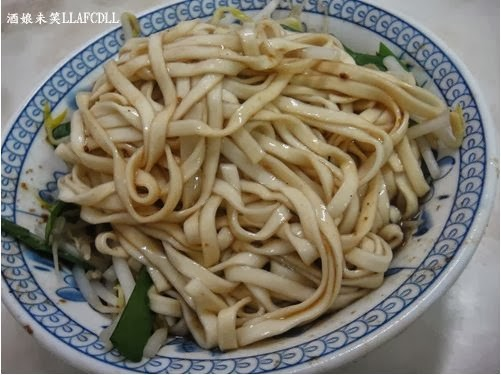

這一家阿土豆漿大王已經開了三十多年,
雖然是在巷子裡面,卻是人潮洶湧,翻桌率超高的一家店!

外面有桌椅,裡面也有用餐的桌椅.
蒸籠旁邊的就是煮麵的攤子!

第一次看到菜單的人,應該會感覺很驚訝.
因為店家雖然是叫豆漿大王,卻有賣乾麵,餛飩湯
要吃什麼呢?
你只要點菜單上面,有標上"NO 1"的產品就對了

桌上有一些調味料,
右邊是店家自製的辣椒醬,味道挺不錯的!
想要吃辣的人,可以多攙幾匙!

左邊是乾麵加蛋(40元),右邊是熱豆漿(15元)

熱豆漿(15元)
店家只有每天熬一小鍋,晚來的人,就只能喝冰豆漿!
熱豆漿還蠻濃的,喝起來很順口,
怕甜的人,可以請店家把糖放少一點!

陽春麵加荷包蛋(40元)
這個是店家的熱門商品,每個人都是衝著它而來的!
荷包蛋通常都會先煎好,若是不愛吃蛋那麼熟的人,可以跟店家說一聲!

店家的陽春麵就只有簡單的韭菜,豆芽菜,白麵條,碗底的滷汁!

記得要攪拌均勻之後食用!
這一碗麵因為攙有豬油,所以,吃起來特別香.

尤其是滷汁調得鹹淡剛剛好,搭配煮得Q彈有勁的麵條,讓人一吃就超愛那個味道!
恨不得每天都能來到店家報到! 金害!
p.s. 第二次回訪時,不是老闆掌廚,味道就比較差了!
苗栗市的早餐實在太猛了,不僅有好吃的水晶餃,炒麵與炒米粉,還有那麼好吃的陽春麵,
住在苗栗市的人,真是幸福啊!
p.s. 若是住在後龍的人,也有好吃的乾麵可以吃,可以試試
橫仔肉圓(王老師肉圓)--http://www.wretch.cc/blog/llafcdll/22503627
=============================
店名: [苗栗苗栗] 阿土豆漿大王(推麵加荷包蛋)
地址：苗栗市建功里大埔街33號（苗栗縣地政事務所對面）
電話: 037-336-060
營業時間: 早上5:00--早上10:30(禮拜一公休)
停車: 機車易,汽車尚可
引用文章:酒娘未笑